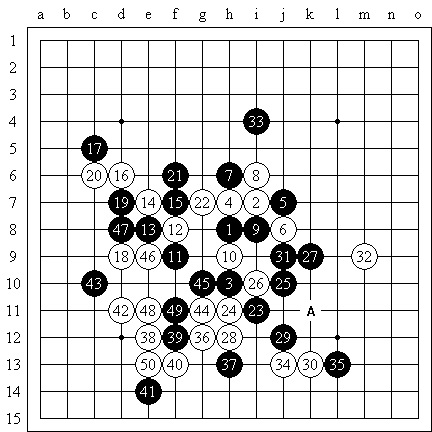
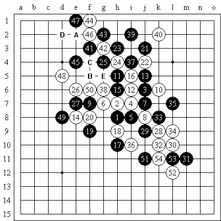

黄张领跑冠军杯 钱坤胜棋王
首页
茗弈阁
#1 黄张领跑冠军杯 钱坤胜棋王 作者：刺青 发表时间：2010-2-28 13:12:30
（上海消息 通讯员：风云）2月27日，第三届上海五子棋“冠军杯”赛在古滇茶坊开战，郑蔚楠四段临时有事弃权，贺启发、顾炜等7名棋手参赛，易伊神担任裁判员。 今天进行了4轮对局，黄宇峰六段和张轶峰四段分别保持全胜，比第二集团多出2分，领跑比赛。首届全国智运会五子棋男子冠军贺启发六段在首轮“残月局”执白轻松战胜钱坤2级后，第2轮“松月局”执白一步随手速败给上海棋王顾炜八段，第3轮在“银月局”执黑优势情况下计算错误再败给黄宇峰，第4轮战胜薛文曦六段。顾炜在第1轮“水月局”执白抓住王烨林二段的一步疏漏获胜，第2轮则因贺启发的随手速胜，第3轮“明星局”执黑错过一招必胜的机会，此后更在优势局面下一步随意被钱坤逆转落败，或是受前局影响，第4轮更是执黑在“疏星局”必胜情况下2次漏杀负于黄宇峰。 从目前情况分析，最有可能获得冠军的将是黄宇峰或张轶峰，而前者的概率更大些。

黑：顾炜 VS 白：钱坤（不换） 5A=22 白50黑投了，黑31=A必胜

黑：顾炜 VS 白：黄宇峰（不换） 5A=6 白52黑投了
#2 Re:黄张领跑冠军杯 钱坤胜棋王 作者：岑小鱼 发表时间：2010-2-28 17:20:28
祝大家赛出水平~~
#3 Re:黄张领跑冠军杯 钱坤胜棋王 作者：测试规则 发表时间：2010-2-28 20:06:44
为什么只发了顾炜老师的棋谱，其他人的呢？